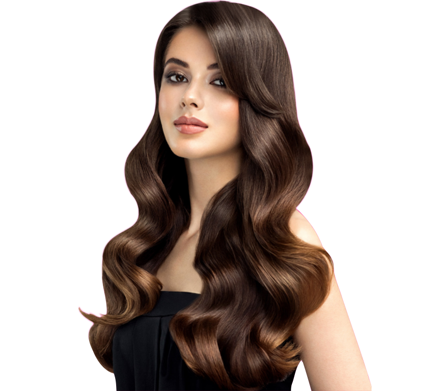
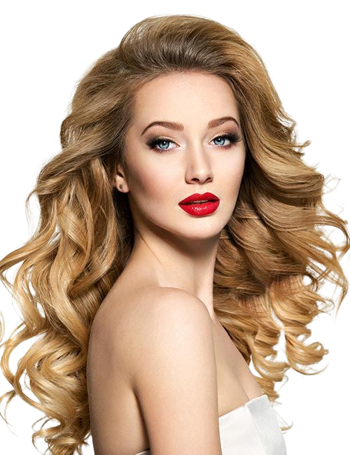
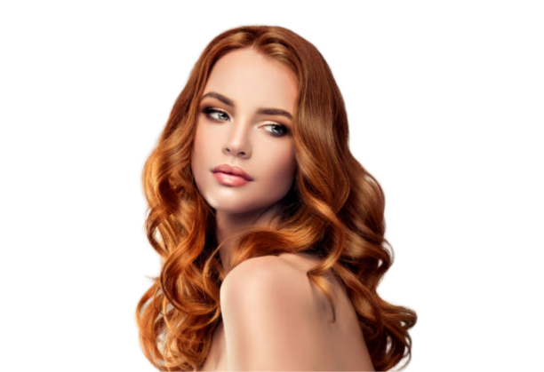
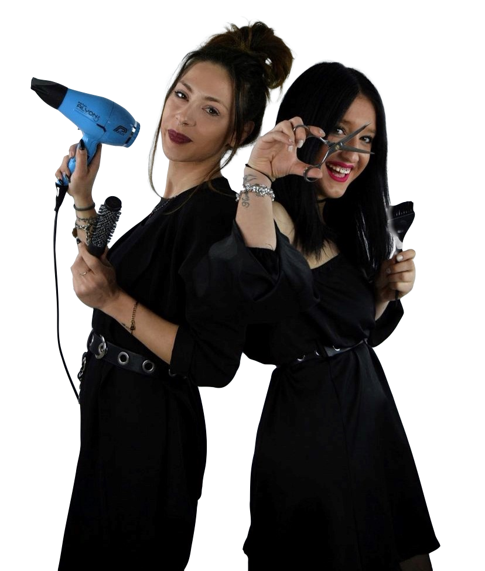

Il tuo consulente di Bellezza



Il salone vanta una storia decennale nel panorama dei parrucchieri di
Città di Castello e non solo (Sansepolcro, Umbertide e tutta la Valtiberina).
La ricerca della qualità e delle tendenze hanno sempre accompagnato il salone nel suo percorso fino all’attuale sede, nella quale lo staff festeggia nel 2022 i 10 anni di attività.
Anni di esperienza e innovazione hanno portato la Nostra realtà oggi gestita dalle titolari Samantah, Michelle e Roberta ad avere riconoscimenti prima di tutto dai numerosi clienti che apprezzano il nostro lavoro.
Collaborazioni con le più grandi aziende del settore e le più grandi accademie di hairdresser mondiali.
Il costante affiancamento con il mondo della moda fanno sì che le Nostre proposte siano all’avanguardia ma nel pieno rispetto della salute dei Vostri capelli. Lo staff SM Parrucchieri vi aspetta! Samantha, Michelle e Roberta saranno liete di consigliarvi il look giusto per la vostra personalità nel rispetto della morfologia dei vostri capelli.

La costante collaborazione con le aziende leader nel mondo dei prodotti professionali e le più famose english academy, e look per lei direttamente dalle passerelle di alta moda.
Extension 100% natural hair, colorazioni con effetti 3d, sovrapposizioni di colore e schiariture, flamboyage, colori senza ammoniaca, color cocktail, ricostruzione alla cheratina, consulenza gratuita su problemi di caduta e varie anomalie con ausilio di microcamera.
Lo staff S M Parrucchieri vi aspetta a Città di Castello
per diventare i Vostri consulenti di bellezza!
 Via Liguria, 2
Via Liguria, 2